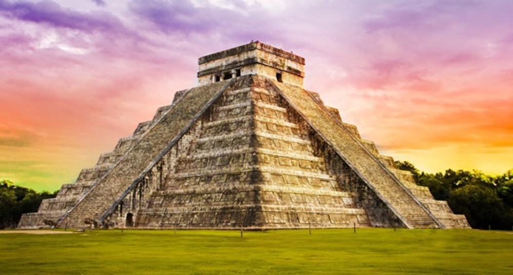
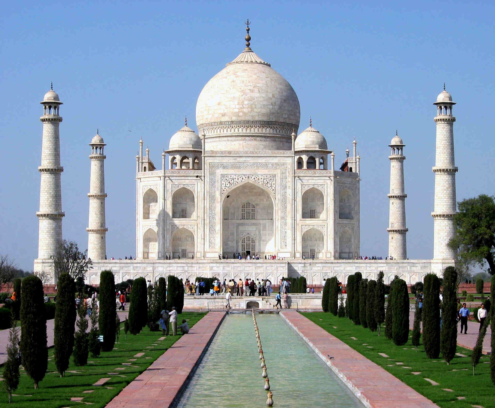
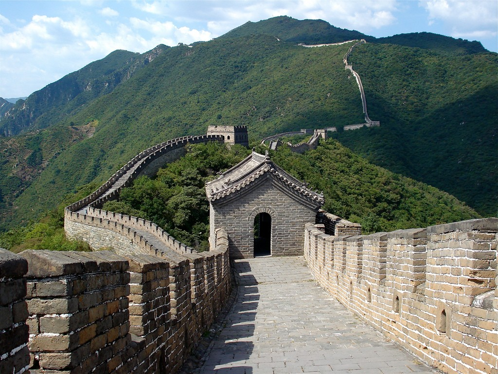
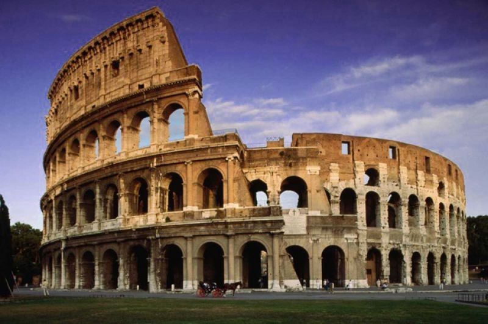

Maravillas modernas construidas por el hombre
Chichen Itzá
La primera de nuestras maravillas llega en forma de ciudad maya. Fue fundada definitivamente en el año 525 a.C. y empalizada cerca de Yucatán, en el municipio de Tinun (Sur de México). En el año 1988 fue declarada patrimonio de la humanidad por la UNESCO y desde el año 2007 es considerada una de las siete maravillas modernas.
Taj Mahal
Este palacio fue construido entre 1631 y 1654. Se compone de un conjunto de edificios situado en Agra, ciudad India de Uttar Pradesh. Fue un encargo del emperador Shah Jahan, emperador mongol, para su esposa favorita, Mumtaz Mahal. Maravilla desde 2007.
Gran Muralla China
Quizá la más espectacular de todas las maravillas. Construida en el Siglo IV a.C., constituía una fortaleza ante ejércitos invasores. Tuvo una longitud de alrededor de 8.851 kilómetros, y en promedio mide de 4 a 5 metros de ancho, y entre 6 y 7 de alto. Actualmente solo se conserva el 30%. Maravilla en 2007.
Coliseo
Viajamos a Europa, a la bella Italia, donde encontramos el Coliseo romano. Fue construido en el siglo I d.C. y en él se llevaban a cabo luchas entre gladiadores, entre bestias y otros espectáculos públicos (hasta batallas navales). Maravilla desde el año 2007.